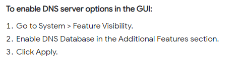

Fortinet aantekeningen
Inhoudsopgave
Diversen Fortigates Datacenter
DNS
Bij de DNS-server moet unset mode uitgevoerd worden.
Voorlopig DNS (UDP/53) gebruiken.
Dit betekent dat DNS-requests nu unencrypted over het internet gaan.
Op zich is dat niet zo'n groot probleem. Je zou er voor kunnen kiezen om dat te encrypten, maar hoe dat moet dat zou nog helemaal uitgezocht moeten worden.\
Om er voor te zorgen dat op alle VLAN's DNS-resolving werkt moet in onderstaand scherm alle VLAN's toegevoegd worden.
DNS Database
Om DNS Servers (en daarmee DNS Databases) onder Network te kunnen zien dient het volgende uitgevoerd te worden:

Voor bijvoorbeeld een nieuwe Ruckus-AP is het nodig dat de DNS-entry ruckuscontroller geresolved wordt naar een bepaalde IP-nummer met een domain suffix erachter. Bij TWI wordt dat ruckuscontroller.nwv16.monta.tech Allereerst moet dan het domain aangemaakt worden. Daaronder worden de DNS-entries aangemaakt: Dit is vervolgens in het script gezet. Hierbij is uitgegaan van het IP-nr van de nieuwe Ruckus-controller.
DHCP
In de Fortimanager is de DHCP-server van een bepaalde interface als volgt te zien.
Hierbij is bijvoorbeeld het domain te zien.
In een Fortigate is dit niet te zien, alleen via de CLI.
config system dhcp server
show
NAT
Bij alle policies moet NAT enabled worden.
Firewall logging
Firewall Logging is als volgt te bekijken op een Fortigate.
Er zijn 2 manieren:
Bij Log & Report \ Forward traffice is een tandwiel te voorschijn te halen waarmee de gewenste kolommen ingesteld kunnen worden waaronder een destination port.
Vervolgens kunnen er filters toegevoegd worden.
Via Firewall Policy kan gekozen worden voor “show matching logs”.
System Settings
Als je op de Fortigate bijvoorbeeld bij de settings de idle timeout aanpast voor de webinterface administator dan wordt dit gesynchroniseerd met de Fortimanager.
Dat zie je dan op de Fortimanager terugkomen op de onderstaande plek:
Door het uitvoeren een script komen de instellingen in de Fortimanager onder het device terecht. Pas middels “Install wizard – device settings” wordt het gedeployed naar de Fortigate.
Op onderstaande manier krijg je de setting “set source-ip 10.101.4.1” in een script (per device). set source-ip \((ip_prefix).\)(vestiging_id).
Backups
Er behoeft geen configuratiebackup gemaakt te worden, omdat een fortigate altijd weer opnieuw uitgerold kan worden vanuit de Fortimanager.
Het is wel mogelijk via Automation.
Dit is o.a. beschreven in : "Fortinet FortiGate Automation" https://indeni.com/blog/fortinet-fortigate-automation"
Er kan wel een eenmalige backup gemaakt worden via :
En dan Configuration – Backup.
Packet Capture
Op een bestaande interface kun een packet capture enabelen, stoppen en downloaden.
Bekijk de capture vervolgens met Wire Shark.
NTP
Voor het instellen van NTP is er een script gemaakt, waarbij voor NTP local is ingesteld. Bijvoorbeeld bij een DHCP-scope is de NTP dan als volgt ingesteld: Onder System settings is te zien dat dit dit verwijst naar een Fortiguard tijdserver.
Diversen Fortigates Locaties
Diagnose sniffer :
Bij pingen vanaf een Fortigate op locatie moet het Source-IP opgegeven worden en er moet aangegeven worden dat er SD-WAN gebruikt wordt.
Via de CLI met SSH een switch benaderen werkt als volgt:
DHCP reservering maken door DHCP monitor aan te zetten en dan vandaar uit met rechtermuisknop een vast IP-nr toekennen.
Diversen Fortigates Datacenter
Bij het pingen vanaf een FG oin het datacenter moet als VDOM "root" gekozen worden.
Je kunt in de GUI bovenin "root" kiezen.
Als je vanuit de Vdom "Global" de CLI opent kom je in onderstaand scherm terecht:
Met "end" verlaat je global.
Met "config vdom" kom je in vdom terecht.
Met "edit ?" zie je welke vdom's er zijn.
Met "edit root" kom je ook in root terecht. (als je een niet bestaande vdom intoetst wordt deze aangemaakt, dusl let op).
Je kunt meteen pingen vanuit root.
Dus gelijk bijv. execute ping 10.10.50.1
Vanuit de Vdom "Global" kun een failover initiëren:
"execute ha failover set"
terug gaat via "execute ha failover usnet".
Logview
Vanuit de Fortimanager kan Logview gekozen worden waarmee je op de Fortianalyzer terecht komt.
Kies dan Fortigate - Traffic en voeg criteria toe.
Stel je wilt verkeer van een bepaalde policy-regel bekijken achter haal dan eerst het policyid.
Dit is te vinden in de Fortimanager, maar dan moet er wel een extra kolom aangezet worden.
Bijvoorbeeld de Printingin-fw-regel heeft id 28.
Stel je wilt verkeer van het voice-subnet bekijken dan is onderstaande een goed zoekcriterium.
srcip="172.17.30.0/24" or dstip="172.17.30.0/24"
Interfaces
Meerdere 4G-modems.
Stel je wil 2 4G-modems gebruiken die in dezelfde /24-reeks zitten dan zou je dat als volgt op kunnen lossen:
Oud:
4G -> WAN1 -> 192.168.39.142/24 GW 192.168.39.1
4G -> Internal1 -> 192.168.39.149/24 GW 192.168.39.1
Nieuw:
4G -> WAN1 -> 192.168.39.142/25 GW 192.168.39.129
4G -> Internal1 -> 192.168.39.14/25 GW 192.168.39.1
VPN
Als de VPN overschakelt bij SD-WAN is dit te zien in de logging.